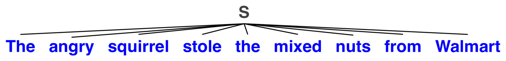
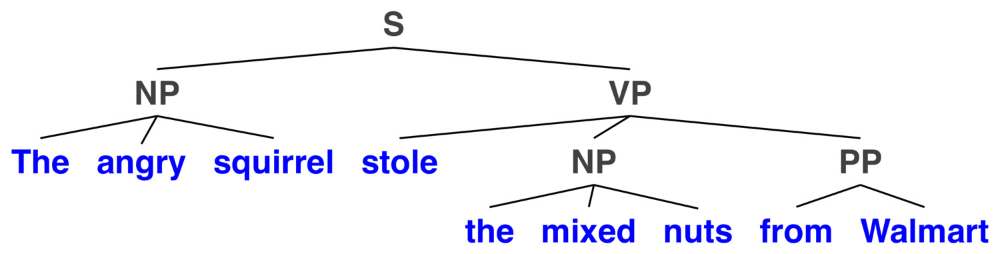
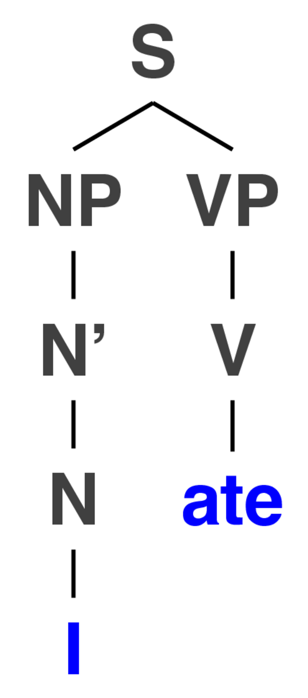
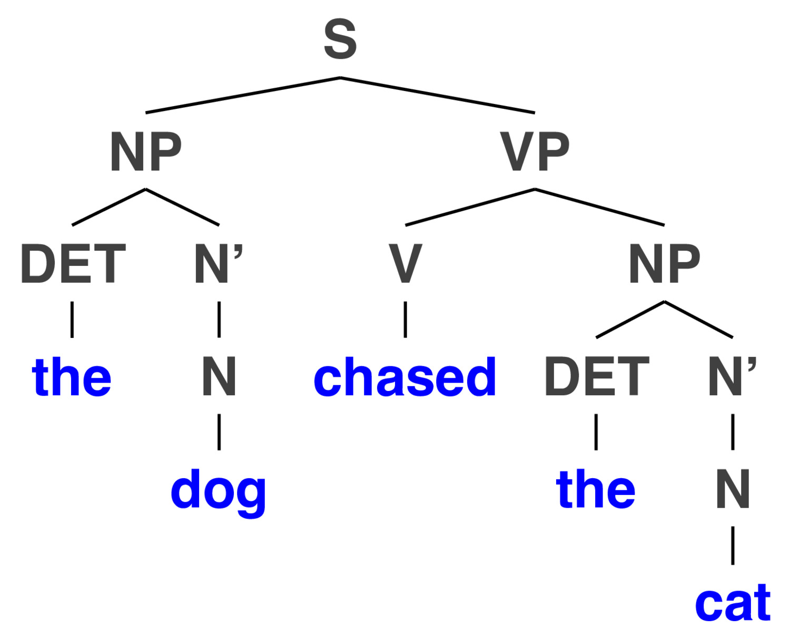
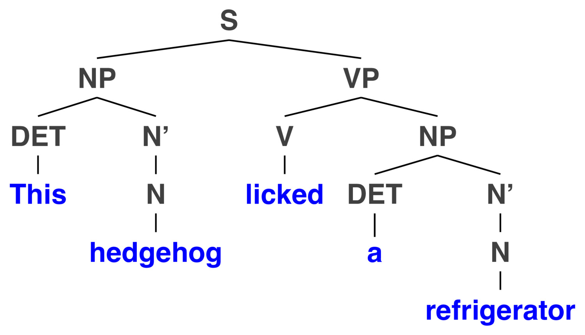
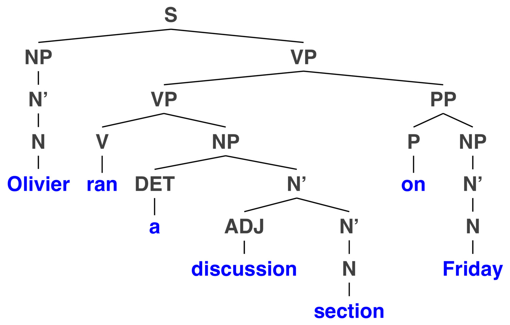

Why do we need Syntax?
Constituency and Constituency Testing
Syntactic Hierarchy
Syntax Trees
“Will ate the veggie burger.”
“Jony chased Dieter”
“Dieter chased Jony”
“Will waved to Hagyeong”
“Will insulted Michael Bay”
*Ate Will the Veggie Burger
*Jony Dieter Chased
*Will Burger Veggie Ate
“Will ate the veggie burger”
“Will ate it”
“Will ate what?”
“What did Will eat?”
*“What did Will eat it?”
“Will likes ambiguity more than most people”
“Will likes ambiguity more than most people do”
“Will likes ambiguity more than he likes most people”
“What determines the order and arragement of words in sentences?”
“What orderings and arrangements are grammatical in a language?”
“How do we identify the meaning of words given their ordering?”
“How does the ordering within a sentence change in contexts?”
A group of words which ‘go together’ in the structure of the sentence
Constituents are always a continuous string of words


Using grammatical tests and manipulations to determine whether something is a valid constituent
“Can this chunk be swapped for something else?”
“Can this chunk form a standalone answer?”
Can you replace that element of the sentence with a placeholder?
He eyed it
The indignant kitten did so.
The indignant kitten eyed what with digust when?
The kitten eyed my veggie burger how yesterday at dinner?
The obligate carnivore eyed my dinner with disgust then
There are other chunks we can’t isolate like this
Wh-words (who, what, where, when, how, why)
Pronouns (he, it, her, them, they, that)
Adverbs of Place and Time (then, there)
“Do so”
What does ‘it’ refer to in “The angry dog ate John’s moldy sandwich. It was disappointed.”
‘It’ can replace ‘the angry dog’ or ‘John’s moldy sandwich’ but not ‘the dog ate’
‘Which complete constituent of a prior sentence does this thing refer to?’
“Who bought the gift card?”
“What did he buy?”
“Where was the gift card to?”
“When did he buy it?”
“What did Robert do?”
“How did he buy it?”
We want these systems to give us full chunks in response to questions
“Who owns the crown jewels?” “The Queen”
“Which light is on, the living room or kitchen light?” “The light is on.”
“What did Raul do on Friday?” “He went.”
There are many more!
Let’s test it out
[The angry squirrel] - ‘Noun Phrase’ (NP), headed by a noun
[stole the mixed nuts from Walmart] - ‘Verb Phrase’ (VP), headed by a verb
[from Walmart] - ‘Prepositional Phrase’ (PP), headed by a preposition.
The angry squirrel stole the mixed nuts from Walmart - The Sentence (S)
We seem to ‘understand’ it as language speakers
Syntactic rules make constant reference to constituents
We’re pretty sure that whatever syntax is in the mind, constituency is a part of it
“OK, OK. We get it. Constituency is a thing.”
Words combine into phrases/constituents
Phrases combine to form bigger phrases.
Phrases combine to form sentences.
Phrase structure rules show how words/phrases combine to form larger phrases/sentences.




A representation of the hierarchical structure of sentences, capturing constituency.
Derived from a finite set of rules which dictate the ordering of components





This constituent is made up of these subparts
S -> NP VP
NP -> DET N’
N’ -> N
VP -> V NP
… and many more



Good rules can generate all of the grammatical and ‘good’ forms
This is great for linguistics and the idea of grammar
Which all depends on having a smoothly functioning grammar
… and creates a lot of structure, which may not all be needed
So we’ll talk about the approach more commonly used in NLP soon!
We know that languages can use word order to understand what went on
We know that there’s more to it than ordering
We know that constituents of sentences are a thing
We can read tree diagrams to understand the nature of that hierarchy